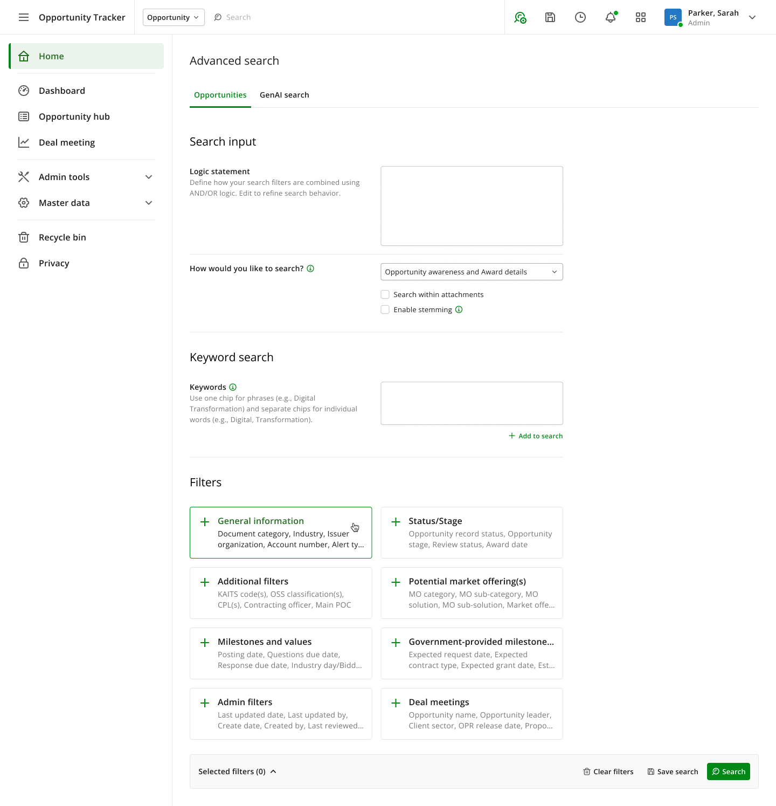
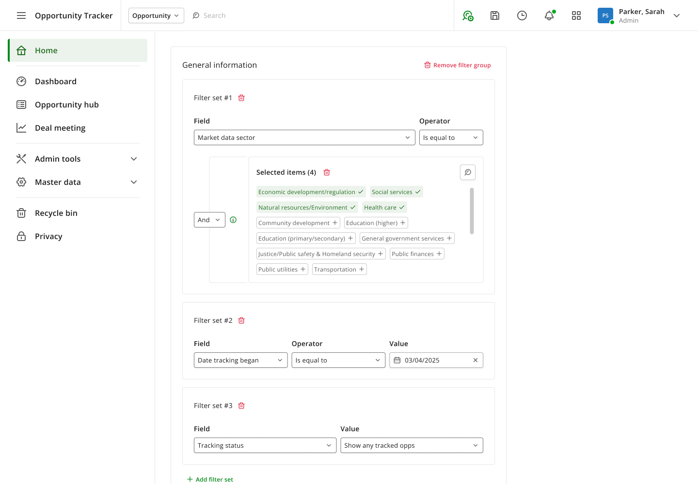
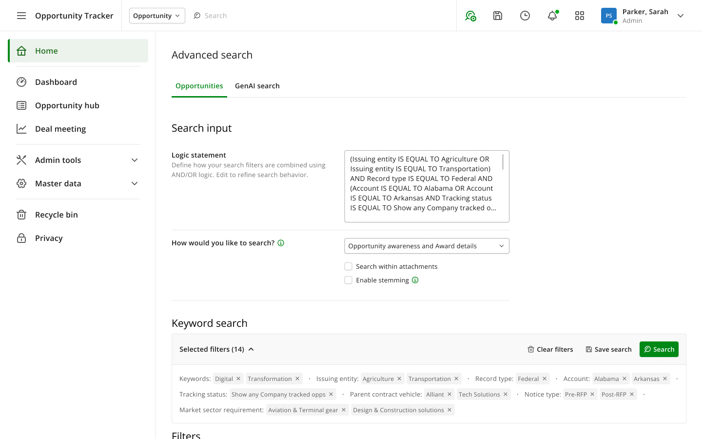
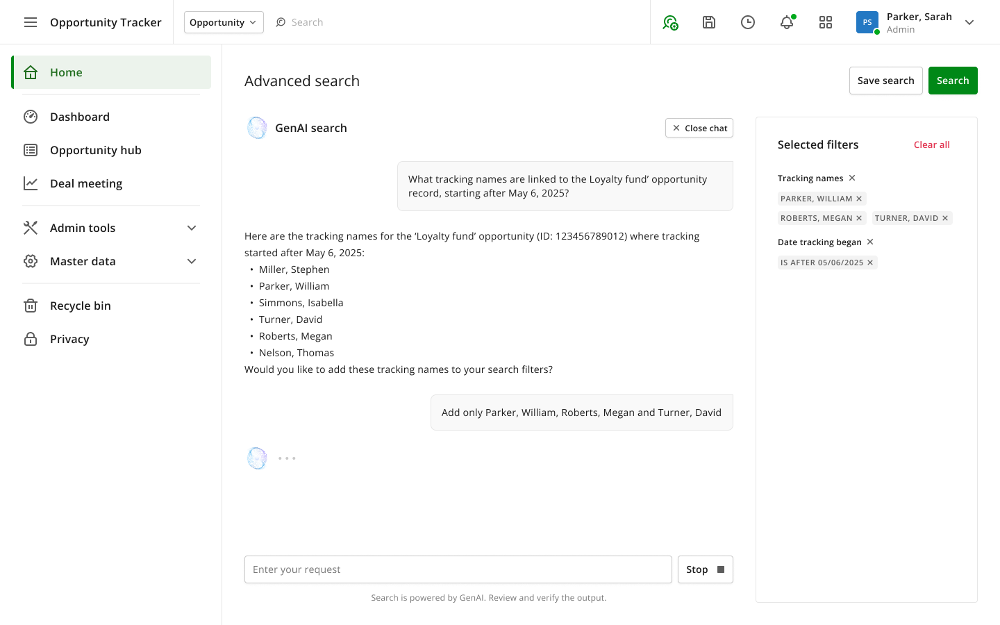
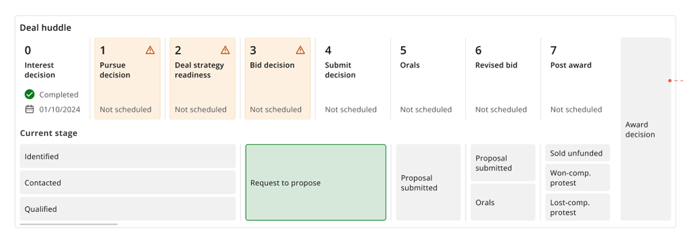
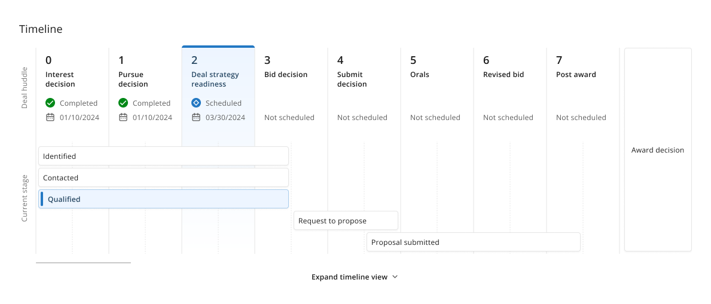
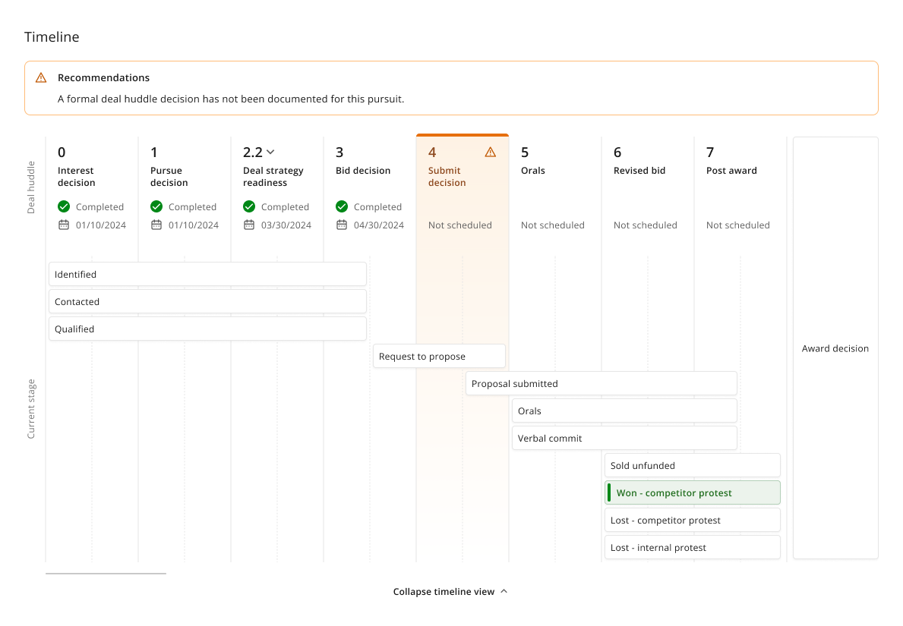

Making a complex system legible
Market intelligence platform for public sector opportunities

- Constraint
- Dozens of searchable fields, conditions combined with And/Or, categories nested several levels deep, and a regulated domain where a wrong search result means a missed bid.
- Decision
- Replace the fixed form with filter sets people can combine themselves, and let each field decide what control it gets.
- Trade-off
- Search still takes some learning, but every part of it is now visible and understandable.
- Role
- Product designer, working with other designers
- Timeframe
- About 2 years, at different stages of the project
- Context
- Enterprise platform that tracks public sector contract opportunities from first interest to award
- Outcome
- Advanced search rebuilt from a fixed form into a flexible query builder. Deal timeline redesigned after usability testing, and users strongly preferred the new version.
The platform
This platform tracks government contract opportunities from first interest to award. Bid teams use it to find opportunities worth bidding on and to move each deal through a series of approvals. I worked on it for the whole life of the project, from the first dashboard designs to redesigns and new features, and I was often brought in for the more complex parts. We worked closely with real users and met with them several times a week. These are two stories from that work: advanced search and the deal timeline.
What was wrong with advanced search
To find opportunities, people filled in a long form with fields in two fixed columns, plus collapsed panels with accordions inside accordions. It was far more than one screen could show at once.
There were two problems:
- Every field looked the same. A date, a status and a multi-level category list all got the same kind of row, so the And/Or controls often ended up in places that made no sense.
- The form decided what you could search for. You could fill in values, but you couldn't build your own search, for example by using the same field twice or combining conditions in a certain way.
So people were working around a tool that couldn't ask the questions they actually had.
Rebuilding search as something you build
I changed it from a form you fill in to a search you build yourself.

- Filter groups as starting points. Eight cards, each showing the fields inside. You see everything you can search by, and you only open what you need. This replaced the nested accordions.
- Filter sets inside each group. A filter set is one field, a condition and the values. You add as many as you need and combine them with And or Or.
- Each field gets the control it needs. A date gets a date picker, a status gets a dropdown, and a category gets a multi-select with its own And/Or, where your selected values stay at the top so they never scroll out of view.
- You always see what's applied. Every active filter appears as a chip you can remove, grouped by field, with a live count.

Letting each field decide its own control is what made this work at scale. The old form broke because one layout had to fit every type of field. Now, adding more fields doesn't make search more confusing.

Making the complexity manageable
The complexity of this domain is real, and no interface can make it disappear. What the redesign does is make it understandable step by step: the structure is visible, details open when you need them, and you can check your search before you run it.
Natural language search
Stakeholders asked for natural language search, so people could describe what they're looking for in their own words. My key decision was that the assistant fills in the filters instead of jumping straight to results. You can check each filter, remove any of them, and then run or save the search yourself.
AI search often fails because people can't check what it did. This way, the AI makes searching faster, and people still see exactly what they're searching for. In a domain where a wrong result means a missed bid, that matters.

The deal timeline, and why users skipped it
Every opportunity runs two processes at the same time: a series of formal review meetings, and the stage the deal has actually reached. The team needs to know whether the two match, because a mismatch means the record is wrong or someone skipped a step.
Usability testing showed that users skipped the original timeline, didn't notice it, or couldn't understand it, even though it was at the top of the page. I was brought in to redesign it.
The problem was the structure. The two processes were shown as two separate lists, and they didn't line up, so there was no way to see which stage belonged to which meeting. The system warned users about a mismatch, but the layout made it impossible to see.

Putting both processes on one line

- One shared timeline. Each deal stage now stretches across the review meetings it belongs to, so any mismatch stands out.
- One warning instead of several. Only the cell that needs attention is marked, and its whole column is highlighted, so the eye goes straight to it.
- Expand and collapse. Collapsed, it shows where the deal is now. Expanded, it shows every possible outcome.
- Colour shows the outcome. The award decision turns green when won, red when lost and grey when abandoned.

Result
We showed the new timeline to users, and they strongly preferred it to the original.
The advanced search redesign was mine from start to finish, including the core idea. For the timeline, I rebuilt the structure based on the testing findings and added new features on top.